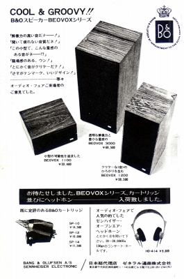
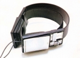
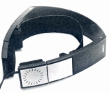
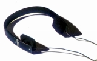

B&O （バング・アンド・オルフセン）
1925年に創業したデンマークのオーディオ・ビジュアル製品のブランド。デザインが非常に優れていることで有名。そのデザインは、オーディオにおけるインダストリアル・デザインの代表的存在として高く評価されており、割高な製品が多いが音質についても手堅いとの評価が多い。近年ではイヤフォン「A8」が、デザイン・装着感・音質のバランスがとれており好評だった。またカートリッジやスピーカーは、単体でも評価されていた。
1970年代始めにはゼネラル通商が代理店を務めていたが、その後アクステックシステム、イースト・アジアチックを経て、バング・アンド・オルフセン・ジャパンに変わり、1990年代には日本マランツの扱いとなった時期があるが、2000年頃には再びバング・アンド・オルフセン・ジャパンとなった。最近では直営店を展開しているようだ。

（1972年の広告）
ヘッドフォンで最初に日本で紹介されたU-70は動電全面駆動型で「オルソダイナミック型」との記述がある。次に導入されたのが Form 1/Form
2で、デザインに対する評価は高かった。ともにロングランモデルで何度も価格の改訂があった。なおForm
2はコード長など仕様を替えながらサイト公開時点では現役（2009年4月）モデルであった。
（動電全面駆動型） U-70

(U-70)


(左 Form 1 右 Form 2)